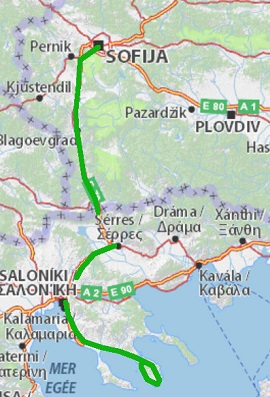

Европамоят континент
За това пътуване
Автомобил: 1200 kmОбщa Статистика
Самолет: 29415 kmАвтомобил: 26819 km
Влак: 3972 km
Кораб: 928 km
Общо: 61134 km
Градове: 52
Държави: 20
Континенти: 2
Леа на море
На 3-ти Май 2013-та се роди Леа - нашето чаровно и мило момиче. Като трето дете, не и треперихме много и още първия месец ходи на Макоцево при кончетата, после на Рибарица и така дойде Септември и времето за бебешкото море.

София - Ситония
Вече бяхме сменили комбито с по – просторен миниван с който потеглихме на обиколка на Ситония.
Първата ни спирка беше Вурвуру, от там ходихме на плаж на Кариди и Лагониси.
След седмица се преместихме на Каламици. Там освен на плажа на къмпинга ходихме в Торони и Порто Куфо.
Мекото септемврийско слънце сякаш ни галеше, водата беше приятно топла. Бяхме щастливи. Какво ли ни чака от тук на сетне? Предстой да разберем, важното е да сме заедно!